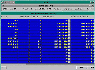

The Machine screen lists the other systems and devices that FortnaPlus© communicates with. These are typically other FortnaPlus© systems, scanners, scales, and Warehouse Management systems.
In an installation where there are multiple FortnaPlus© systems, all of the FortnaPlus© systems are listed in each machine's Machine menu. Every FortnaPlus© system name other than the machine the copy of FortnaPlus© is on, has a P2 appended to its name. FortnaPlus© uses these names to communicate the status of parts between systems. The names of the other systems and devices are arbitrary names chosen by Fortna personnel.
The other fields that must be configured are the connection type, communication protocol, port, process, and whether messages will be stored in the database.
Click Here to see a screen shot of this menu. 
Fields:
- Machine Name - the name of the machine or device
- Machine Index - automatically generated
- Machine PID - automatically generated
- Connection Type - a pull down into the Connection Types menu
- Communication Protocol - a pull down into the Protocol Types menu
- Machine Port - the path for the device or computer
- Transmit Retry - the amount of time to wait before resending a message, which has not been acknowledged by the machine.
- Offline - 'Y' if data has been lost due to unacknowledged messages.
- Process - a pull down into the Process Type menu
- UseDB - uses the database for message tracking
- Ignore Dupes - 'Y' to ignore duplicate transmissions for this machine. 'N' tp accept duplicate transmissions
- No Circbuff - used to conserve memory if UseDB is set
- CircSize - used to modify the default circular buffer size for transmitting messages
- Trig Size - incoming messages will be processes after this many characters
- Trig InterChar - incoming messages will be processed after this amount of time between characters
- Trig Time Out - incoming messages will be processed after this amount of time with no characters
- LogFile - a boolean variable that determines if communications are to be logged in a file
- LogLength - determines how many characters of a message are sent to the logfile
- TSN - Transaction Sequence Number - defined by FortnaPlus©. A holding place for protocols that require a TSN.
Click Here to return to the top of the page.
Copyright © 2001 Fortna Inc. All rights reserved.